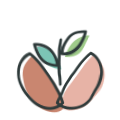
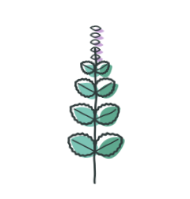
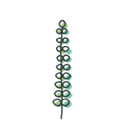
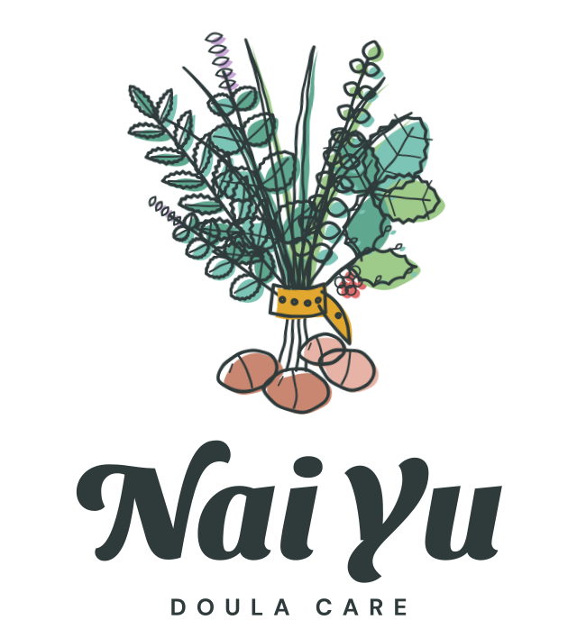
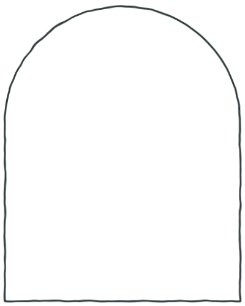
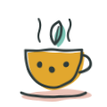
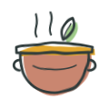
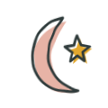
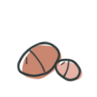

BirthBirth doula support
Time together before birth to get to know your hopes, fears, and choices, then steady, continuous presence through labor, wherever you give birth. Comfort, information, and advocacy so you feel heard.



Full spectrum doula care in Brooklyn with Gabrielle Bass, for birth, postpartum, abortion, loss and every threshold in between.
Rooted in the Grebo phrase “Nai yu,” meaning “my child,” this practice is born from a lineage of care that extends beyond family and into community. In the Grebo language of Liberia, spoken by my maternal family, this phrase embodies a way of being that is generous, nurturing, and deeply relational. It reflects a belief that care belongs to everyone and that we are all held in one another’s growth.
Nai yu is also a term of endearment Liberians use for anyone close to them, the way you might say honey or dear. Growing up, family was expansive. The boundaries of home stretched to hold friends and neighbors, and the children around us, all of whom were considered our own. I learned that care especially from my mom.

Who you’re working with
they/she
Gabrielle is a first-generation Liberian full spectrum community doula from Staten Island, now based in Brooklyn. At the start of their doula career Gabrielle supported low-income Black and Brown families at Queens and Elmhurst Hospitals.
Her care is affirming, grounded, and culturally rooted. She centers queer people, immigrant families, and all birthing people, and advocates for autonomy, connection, and collective care. They are a fully certified full spectrum doula and are currently pursuing additional certification through Birthing Advocacy
Doula care is an extension of love. Care is continuous.
Support shaped around you, your family, and your community, through every kind of pregnancy outcome and transition.

BirthTime together before birth to get to know your hopes, fears, and choices, then steady, continuous presence through labor, wherever you give birth. Comfort, information, and advocacy so you feel heard.

PostpartumSupport in the tender weeks after birth: rest, feeding, newborn care, and space to talk through your birth story, so you can heal and settle in with your baby.

NourishmentWarm, nourishing meals prepared for you and your household in the weeks after birth, so you can rest, heal, and be fed.

AbortionNonjudgmental care before, during, and after an abortion, in a clinic or at home. Clear information, comfort, and aftercare, centered on your choices.
Gentle presence and practical care through miscarriage, stillbirth, or infant loss, and through the grief that follows.

FamilyCare for older children while their new sibling arrives, so they feel included, prepared, and looked after.
Full spectrum lactation education to help you feel prepared and supported in feeding your baby, whatever feeding looks like for you.
Reach out to talk through the support that fits you and your family.
Whether you are planning, deciding, grieving, or simply curious, you are welcome to reach out. Tell Gabrielle a little about where you are and what support you’re looking for.